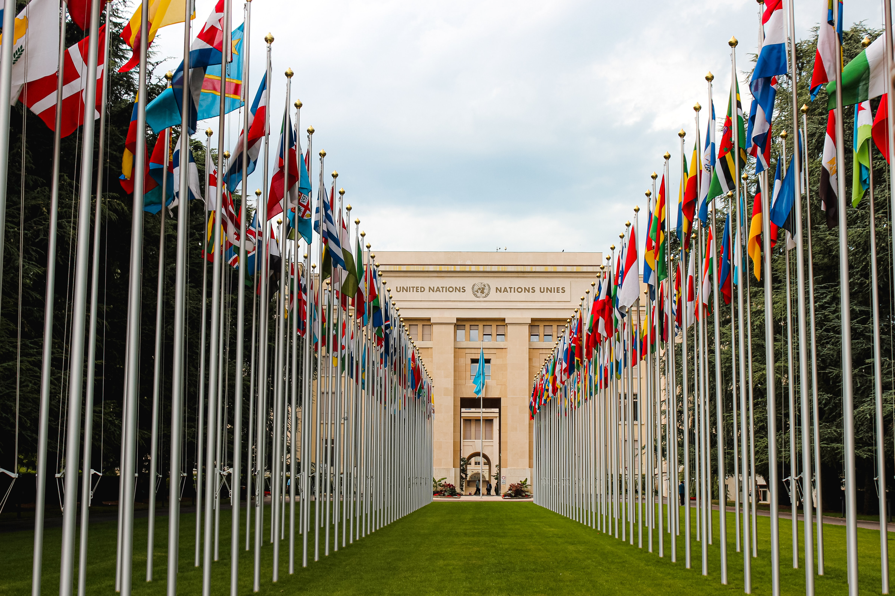

A new U.N. report says it is possible to hold global warming to relatively safe levels, but doing so will require global cooperation, billions of dollars and big changes.
Earth is likley to cross a critical threshold for global warming within the next decade, and nations will need to make an immediate and drastic shift away from fossil fuels to prevent the planet from overheating dangerously beyond that level, according to a major new report released on Monday.